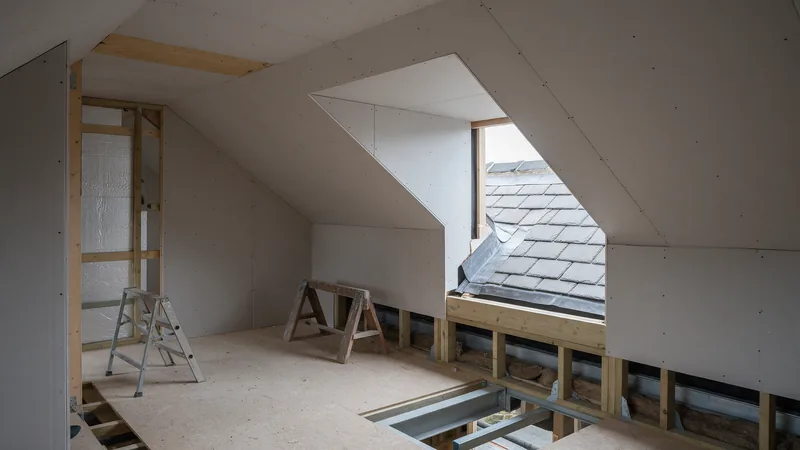

The slope decides it, not the ridge
A flight of stairs needs clear air above the steps all the way up, and that clearance line runs parallel to the flight. So what matters is not how high your ridge is, it is what the roof is doing above the particular line your stairs want to climb. Run the flight towards the eaves and the roof comes down to meet your head exactly where you are standing tallest on the top step.
That is why a loft that measures beautifully can still fail on the stairs, and why we look at the landing on the first visit rather than just the loft. There is a drawing of both ways below. It is the most useful two minutes on this website.
Where the space comes from
A flight has to start somewhere on the floor below, and that space comes from one of three places. Over your existing staircase in the same stairwell, which costs you least and is the first thing we look for. Off the landing, if the landing is long enough, which it usually is not in a modern house. Or out of a bedroom, taking a slice off whichever one is next to the landing.
Losing a slice of a bedroom sounds worse than it is. The slice is usually at one end and it often becomes a cupboard wall in the room it comes out of, so the room loses less than the plan suggests. What is not acceptable is a bedroom that ends up with no window or no door swing, and that gets checked on the drawing rather than on site.
What a loft stair has to be
A proper staircase, with the rise and the going within what the regulations allow, a handrail, and guarding at the top. Alternating tread stairs, the sort where each step is half a tread, are allowed only in very limited circumstances and only for one room. They are not the normal answer and anybody offering one as a way round a tight landing is solving their problem rather than yours.
Then there is the route. The stairs are the way out of the loft in a fire, so the whole staircase from the loft to the front door has to hold together long enough to use: usually the doors onto the stairs upgraded, the alarms linked, and the stairwell kept clear. That is agreed with building control on the drawings and it is the part people are most surprised by.
 Generated photo
Generated photoGenerated for this demo. Not a photograph of a real job.
 Generated photo
Generated photoThe day the opening gets cut is the one day the work is genuinely in the middle of your house rather than above it.
In section
Which way the flight climbs.
The same flight, the same rise, turned round. The dashed line is the clearance a staircase needs over the steps, and it runs parallel to the flight, which is why the slope of the roof decides this rather than the height at the ridge.
Same flight · same rise · wrong direction
You cannot stand up at the top of it
Run the flight so it climbs towards the eaves and the roof comes down to meet you exactly where you are standing tallest. The shaded wedge is where the slope cuts below the line the flight needs over the steps. No amount of ridge height fixes it, because at that end of the room there is no ridge above you. This is the commonest reason a loft that measures fine still will not work as drawn.
Same flight · same rise · comes up in the middle
It arrives where the roof is highest
Same flight, turned round, so you come up into the middle of the room where there is air above your head. That is usually the answer, and it is why the stairs get drawn before anything else: where they land decides where the bed goes, where the shower can go and whether the landing below keeps its window. Sometimes it means taking a slice off a bedroom rather than off the landing, and that is a conversation rather than a surprise.
Drawn in the browser. The shaded wedge is worked out from where the roof line crosses the clearance line rather than drawn by eye.
On the job
How this one usually goes.
- The landing, before the loftStood on the landing with a tape, looking for a run long enough for a flight and working out which way it would have to climb. Then up to check what the roof is doing over that line.
- Drawn, both ways if need beThe flight drawn on the plan with the clearance over the steps shown, and the options compared: over the existing stairs, off the landing, or out of a bedroom.
- Agreed with building controlThe stair, the guarding and the escape route go in with the application, so what gets built is what was approved rather than what gets argued about later.
- Floor first, then the openingThe new loft floor goes in before the stair opening is cut, so there is something to stand on and the ceiling below is supported while the hole is made.
- The opening, in one dayThe dustiest day of the job and the only one really inside your house. The landing sheeted and taped, the opening cut, trimmed in new timber and made safe before anybody leaves.
- Flight inThe staircase fitted, the newels and the handrail on, guarding at the top, and the whole thing boarded over to protect it until the end.
- Fire doors and alarmsDoors onto the stairs upgraded where the approval asks for it, mains linked alarms on every floor, tested and certified with the rest of the electrics.
A sample running order for this demo. Yours depends on the house and on what the drawings come back saying.
Questions
Asked about this job.
Will I lose a bedroom?
Almost never a whole bedroom, and not usually anything like it. The flight needs a run of floor, and where that comes out of a room it is typically a strip along one end which often ends up as a cupboard wall in that room.
What matters is that the room it comes out of keeps a window, a door that opens properly and enough space to be a bedroom. If it would not, that option comes off the drawing and we look at another one. That is a conversation at the start, not a surprise in week three.
Can the new stairs go over the existing ones?
It is the first thing we look for, because it costs you the least floor and it keeps the circulation tidy. It depends on the headroom over the existing flight and on what the roof is doing above where the new one would arrive.
Where it works it is the neat answer. Where the roof is in the way at the top, no amount of wanting it makes it work, and that is what the drawing is for.
What about a spiral or a loft ladder?
A spiral can be done and it is rarely the right answer: they eat more floor than people think, they are hard to carry a mattress up, and the headroom at the top is awkward in a roof.
A loft ladder is not a staircase and a room reached by one is not a bedroom, whatever anybody puts in the listing. If what you want is storage, a good ladder is the right thing and it is on our boarding page. If you want a room, it is a staircase.
Do my doors really have to change?
Sometimes, and it depends on what building control asks for on your particular layout. The principle is that the staircase is the escape route, so the rooms that open onto it should not be able to fill it with smoke straight away.
In practice that is often the doors on the first floor landing upgraded, and sometimes it is less than that because of the alarm layout. It is agreed up front. What it is not is optional on the say so of whoever is doing the work.
How long is the house a building site?
The stairs part is short and sharp. The opening is cut, trimmed and made safe inside a day, and the flight usually goes in within a few days of that. Before and after it, nearly all the work is above your ceiling.
What makes the difference to living with it is the sheeting and the route in and out, which gets set up on day one and taken seriously. The landing gets sheeted and taped every morning and the dust gets vacuumed up at the end of the day rather than at the end of the job.
General trade knowledge written for this demo, not advice on your property.
Our work
Sample jobs like this.
Generated photoOak and paint, going upKirkburton · SampleGenerated photoThe hole in the ceilingSlaithwaite · Sample Generated photoDormer room, finishedMirfield · Sample
Generated photoDormer room, finishedMirfield · Sample
Generated photoLined out, ready for plasterHolmfirth · SampleMade up samples with generated pictures. Tap one for the detail.
Also
The other things we do.
Dormer loft conversions
A box built out of the back slope, so the ceiling goes flat and the room has a wall you can stand a wardrobe against instead of a slope you keep ducking under.
More →Rooflight conversions
The roof line left exactly as it is, with windows let into the slope. The cheapest way up there when the roof already has the height to spare, and the quickest.
More →Hip to gable conversions
For the semi or the end terrace where the roof slopes in at the side and the loft runs out to a point. The end wall gets built up square and the pointed bit becomes room.
More →Loft bedrooms with en suites
A bedroom with its own shower room, laid out so the shower and the basin sit where the ceiling is highest and the bed goes under the slope, which is the only way the room works.
More →Loft boarding and storage
Not a conversion. Boards on raised legs above the insulation so the insulation still works, a hatch you can get through and a light that comes on. The job most people want first.
More →Shall somebody come up and look?
Tell us the house and your postcode. Half an hour with a tape in the loft and on the landing tells us more than any photograph.